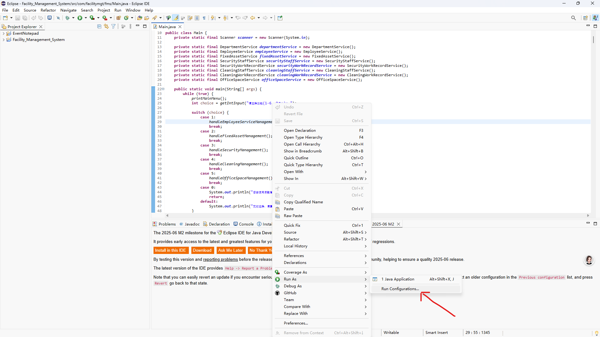

文件编码与 Eclipse 的关系：解决乱码问题
文件编码与 Eclipse 的关系：解决乱码问题全攻略
在日常的编程工作中，乱码问题就像一只令人头疼的 “拦路虎”，时不时跳出来干扰我们的工作节奏。尤其是在使用 Eclipse 进行 Java 开发时，文件乱码和控制台乱码问题尤为常见。这背后的 “罪魁祸首”，其实就是文件编码与 Eclipse 配置之间的 “不兼容”。今天，我们就来深入探讨一下文件编码与 Eclipse 的关系，以及如何通过一些简单的操作解决乱码问题。
一、文件编码基础：UTF-8 与 ANSI（GBK）
在计算机的世界里，文字需要通过特定的编码规则转化为二进制数据进行存储和传输，文件编码就是这些规则的集合。UTF-8 是一种广泛使用的变长字符编码，它能够对世界上几乎所有的字符进行编码，具有很好的兼容性和扩展性，是国际化应用的首选编码方式。而 ANSI 在中文环境下，通常指的是 GBK 编码，它是汉字内码扩展规范，专门针对中文设计，能够支持 2 万多个汉字和符号。
在实际应用中，如果文件保存的编码与程序读取时的编码不一致，就会出现乱码。比如，我们创建了一个 UTF-8 编码的 Java 源文件，但 Eclipse 默认的编码设置与之不匹配，就会导致打开文件时出现乱码现象。
二、记事本转码：解决源文件乱码的 “小妙招”
当我们遇到 UTF-8 编码的文件在 Eclipse 中显示乱码时，利用记事本进行转码是一个简单有效的解决方法。具体操作步骤如下：
- 右键点击乱码的源文件，选择 “打开方式”，然后选择 “记事本” 打开文件。
- 在记事本中，点击左上角的 “文件” 菜单，选择 “另存为”。
- 在弹出的 “另存为” 对话框中，将 “编码” 选项从 “UTF-8” 改为 “ANSI（GBK）” ，然后点击 “保存”。此时会提示是否替换原文件，点击 “是” 即可。
- 替换完成后，重新在 Eclipse 中打开该文件，你会发现乱码问题已经解决。
这种方法的原理是将文件编码从 UTF-8 转换为 GBK，使文件编码与 Eclipse 的默认编码设置（很多情况下 Eclipse 默认编码为 GBK 或与 GBK 兼容的编码）相匹配，从而正确显示文件内容。不过需要注意的是，这种转换可能会对一些包含特殊字符或国际化内容的文件造成影响，在操作前最好先备份文件。
三、Eclipse 控制台乱码：字符编码设置全解析
除了源文件乱码，Eclipse 控制台输出乱码也是让人十分困扰的问题。不过别担心，通过调整 Eclipse 的字符编码设置，就能轻松解决这个问题。以下是具体的操作步骤：
1. 在Main程序下右键，打开运行配置项
2.点击Common，改变编码直至控制台正常；
注：可通过chcp,查看自己电脑编码。
四、总结
文件编码与 Eclipse 的关系紧密相连，乱码问题本质上就是编码不匹配导致的。通过利用记事本将 UTF-8 文件转换为 ANSI（GBK）编码，能够有效解决大部分源文件乱码问题；而合理设置 Eclipse 的字符编码，则可以轻松搞定控制台乱码。希望通过本文的介绍，大家在今后使用 Eclipse 进行开发时，能够更加从容地应对乱码问题，让编程工作更加顺畅高效！